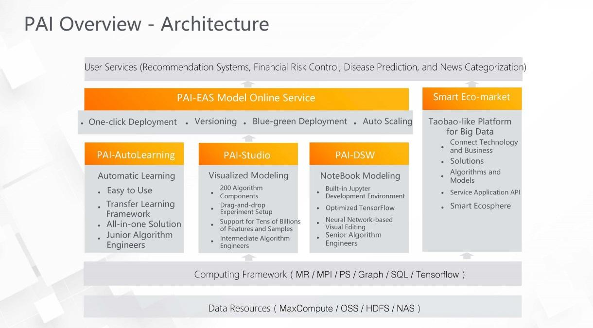

Projects
Alibaba Platform for AI
Alibaba PAI. Alibaba PAI is a machine learning platform for AI based on Ali cloud, which is one of the leading cloud platforms for machine learning in China. It provides all in one machine learning solutions, and provides low threshold. High-performance services include traditional machine learning and deep learning . For machine learning, PAI covers a very comprehensive function as shown, including data pre-processing, feature engineering, automatic parameter adjustment, online prediction, and so on. If you want to implement a complete machine learning task, PAI can cover almost every aspect of it.
-

Next, we introduce four basic components of PAI. PAI studio, PAI DSW PAI EAS, and PAI auto learning. PAI studio is used for visual development. Users can build models by dragging and dropping components on the visual interface. Achieving one key training and model evaluating. In the meantime, PAI studio provides multiple templates of solutions on image classification, text classification, commodity recommendation, etc., which can be quickly applied into practice.
PAI DSW is a cloud-based machine learning development IDE that provides an interactive programming environment. PAI-AutoLearning is an automatic machine learning platform which supports online labeling, automatic model training, superparameter optimization, and model evaluation, etc. Helping users achieve better training results with only a small amount of data. PAI EAS is an online prediction service for online reasoning scenarios to facilitate quick development and application of the model to the business. PAI supports the use of these services individually or in combination. As long as the training data is prepared, all the modeling tasks can be done through PAI to achieve one stop machine learning.
Machine learning can be really difficult for beginners without abundant knowledge in mathematics and computer science, but it can be easy if you have a try of PAI. using PAI, we can easily realize many practical applications of machine learning and data analyzing. These applications are capable of processing both structured data and unstructured data such as text, image, and video. Covering fields ranging from finance to healthcare, to education or to transportation. Here are some typical specific tasks that can be done with PAI. Intelligent labeling such as using OCR technology to extract text information from images and then annotate and put images in groups. Video classification, for example, a large number of short videos on the video platform can be automatically divided into different classes.
News classification. The news text can be automatically divided into politics, finance, science, and technology, sports, and all the different categories. This is prediction based on various physical indicators on the human body. Analysis influence of different characteristics on the disease and predicts the possibility of suffering from a certain disease. Intelligent risk control, such as other risk, identification, credit card risk assessment, public opinion risk control, intelligent recommendation, such as recommending potential favorites for users based on their shopping and browsing on e-commerce platforms.
This typical machine learning applications can be implemented on the PAI platform through existing templates, and users can also develop personalized applications, according to the actual needs. This picture shows the hierarchical framework of PAI. As shown in the picture, the fundamental architecture is divided into five layers. The first and bottom layer is the infrastructure layer, including some fundamental hardwares, such as CPU, GPU, FPGA, and NPU.
The second layer is the computing engine and containers services layer, including computing engines as MaxCompute, EMR, and real-time computing, and Ali Cloud Container Service . MaxCompute is a big data computing service that provides fast, fully managed, petabyte data solutions for analyzing and processing massive amounts of data. The full name of EMR is E-MapReduce. It is a one stop big data processing and analyzing service built on Ali cloud's ECS elastic virtual machine, and provides users with cluster and data management by using open source big data ecosystem.
Real-time computing is an enterprise class, high performance, big data processing system built by Ali Cloud based on Apache Flink. These computing engines can provide powerful computing power, support, and meet the needs of big data services. Ali Cloud Container Service can provide high performance container application management services, allowing users to easily and efficiently run Kubernetes containerized applications from Cloud.
The third layer is the computing framework layer, which can support Alink, MPI, PS, TensorFlow, PyTorch, Caffe, and other computing frameworks, including some mainstream deep learning frameworks for performing distributed computing tasks. The fourth layer is the product in the stages of data preparation, model development, training, and deployment, according to the whole process of machine learning. For data preparation, PAI provides intelligent labeling service, which supports data labeling and data set management in a variety of scenarios.
For the model development and training stage, PAI provides visual modeling PAI-Studio, Notebook interactive modeling PAI-DSW, end-to-end automatic learning, PAI-AutoLearning, etc. For the model deployment stage, PAI provides online predicting service PAI-EAS, which provides resource group management, blue-green deployment, version control, and resources monitoring functions. So as to facilitate the quick deployment of the model as a service and apply it to business.
At the same time, PAI provides an intelligent ecological market to facilitate users access to business solutions, and model algorithms, and to achieve efficient connection between related businesses and technologies. The last layer is the solution layer, based on the above four layers, as well as Alibaba's data and algorithm accumulation over the years, PAI can be widely used in various fields such as finance, medical care, education, transportation, and so on. The above is the five layer architecture of PAI Platform from the basis hardware to the actual application.